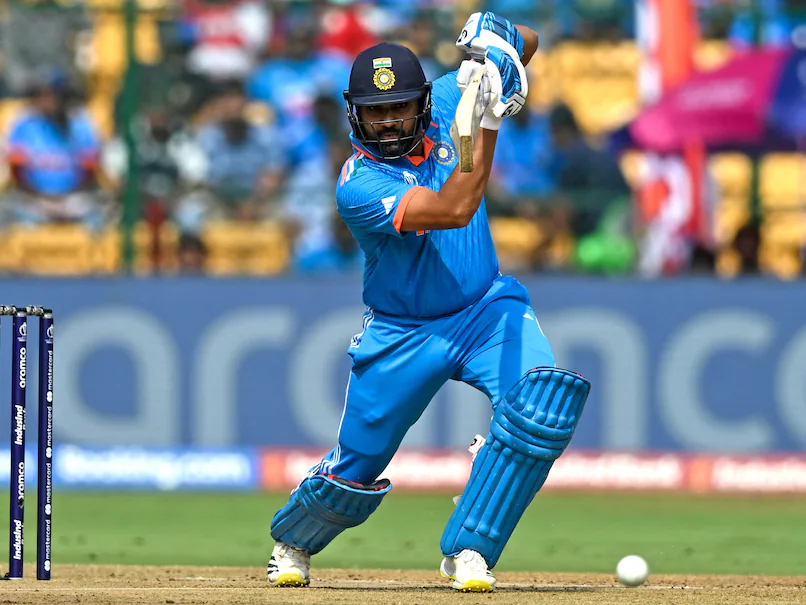
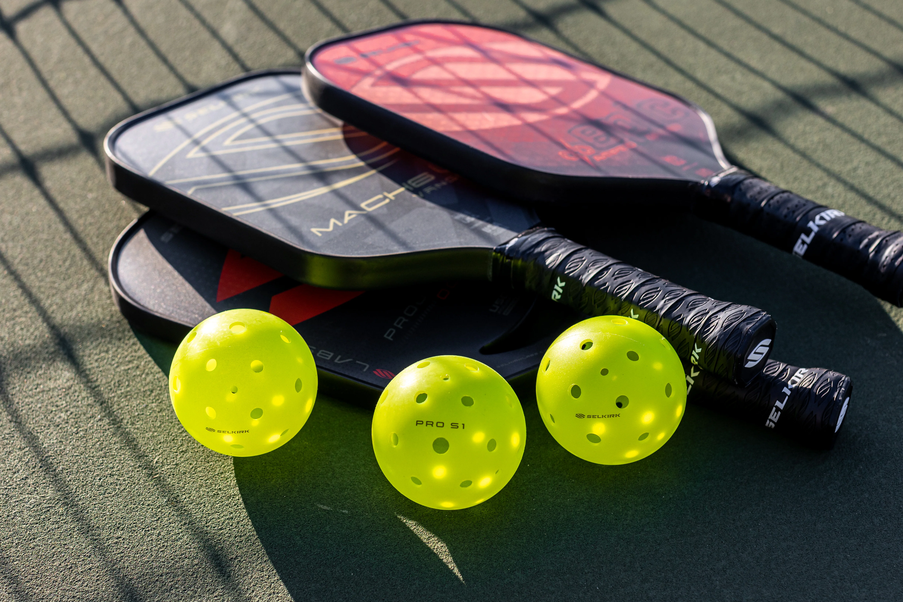

Cricket
Cricket has been one of my biggest passions since I started watching it back in 2015. Over the years, I’ve grown to love not only the excitement of the matches but also the process of analyzing players—their form, performance patterns, and how their skills evolve as they age. This curiosity inspired me to develop my own cricket career prediction model, which estimates the future runs of international players using machine learning. You can explore the interactive dashboard for this project here: Cricket ML Prediction Dashboard .
Beyond analysis, I also love playing cricket on baseball fields with friends in my free time. It’s been an amazing way to bring cricket back into my hometown. Watching the community slowly grow around the sport has been incredibly rewarding. I’m a big fan of Rohit Sharma, Virat Kohli, Jasprit Bumrah, Ravichandran Ashwin, and Ravindra Jadeja because they've all inspired me through both their skill and consistency over the years.
Pickleball
Outside of cricket, I spend a lot of time playing pickleball with my friends. I’m part of NEU's intramural pickleball league, and I came close to making the finals this season. Back home, I organized and competed in six pickleball doubles tournaments, each featuring more than eight players. I managed to win all six tournaments, each time with a different partner, which made it even more special. Coordinating the matches, managing brackets, and building a fun competitive atmosphere was just as exciting as playing itself.
Food
I absolutely love Indian and Italian food, especially the restaurants that serve them around Jersey and Boston. Whether it’s grabbing a dosa or five cheese ziti, those two cuisines will never disappoint. Honestly, any type of pizza place will satisfy me, especially Dominoes.
Movies and Shows

When I’m not analyzing data or playing sports, I love watching movies and shows. My all-time favorites are Avatar: The Last Airbender (ATLA) and The Legend of Korra (LOK). I also really enjoyed the movie 83, which beautifully captured India’s iconic World Cup win in 1983. In terms of TV shows, Cobra Kai and Never Have I Ever are absolute classics for me and have stayed with me for years.
Travel & Favorite Places

I love relaxing in warm, sunny places like beaches and tropical locations because they're great spots to unwind. The beaches in the Bahamas, Cancun, and even France during the summer have been some of my favorite destinations so far. One of my top travel goals is to visit England, especially to watch a live cricket match there someday at Lord's.
Recap of Some of My Favorite Things:
- Watching and analyzing international cricket
- Playing pickleball and organizing tournaments
- Exploring new Indian and Italian restaurants
- Rewatching my favorite shows like ATLA and Cobra Kai
- Traveling to beaches and warm destinations